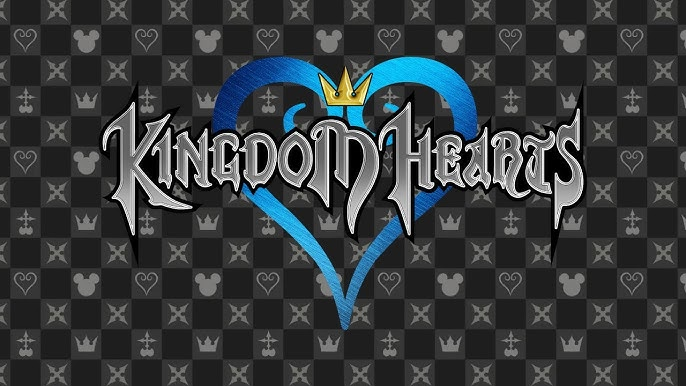

Overview
Pulse & Pole is a rhythm-based combat game where the player controls two magnetic forces: one positive and one negative. The enemy stands between them, shifting polarity in sync with the music, and the player must choose the opposite polarity on beat to deal damage.
Q / E
Q controls the Positive Magnet. E controls the Negative Magnet.
Opposites attack
If the enemy is positive, use negative. If the enemy is negative, use positive.
Three lives
Mistimed or incorrect attacks cost a life. Lose all three and the level restarts.
How it works
- The enemy changes polarity in time with the music.
- Successful inputs made on beat deal damage.
- Incorrect inputs or mistimed attacks cost the player a life.
- The song becomes harder to keep up with as the level progresses.
The game turns rhythm timing into combat pressure. Players are not only listening for the beat, but also reading polarity changes and reacting with the correct magnetic force.
Gameplay Video
Replace the placeholder YouTube embed below with the final Pulse & Pole gameplay video.
Audio & Sound Effects
My role on Pulse & Pole was focused on creating the game’s audio and sound effects. Because the project centered on rhythm and magnet-based combat, I wanted the soundscape to feel energetic, readable, and magical.
Effect 01
Replace this with one of the / polarity sound effects.
Effect 02
Replace this with one of the rhythm hit / attack sound effects.
Effect 03
Replace this with one of the mistake / feedback sound effects.
Inspiration & Process
Kingdom Hearts-inspired
To create the game's audio and sound effects, I drew inspiration from the magical and sparkly sound design found in the Kingdom Hearts series. I felt that style complemented the rhythm-based gameplay and magnet-themed mechanics, giving each action a bright, energetic sense of feedback.

I used a combination of free sound effects and sampled audio to create -based assets, then experimented extensively in Audacity by layering, editing, and combining sounds until they matched the magical feel I was aiming for. The end result was a soundscape designed to support both the gameplay readability and the overall aesthetic of the project.
Credits
Made for PSCP Ratchet Up 2026.
Kaylee Morales